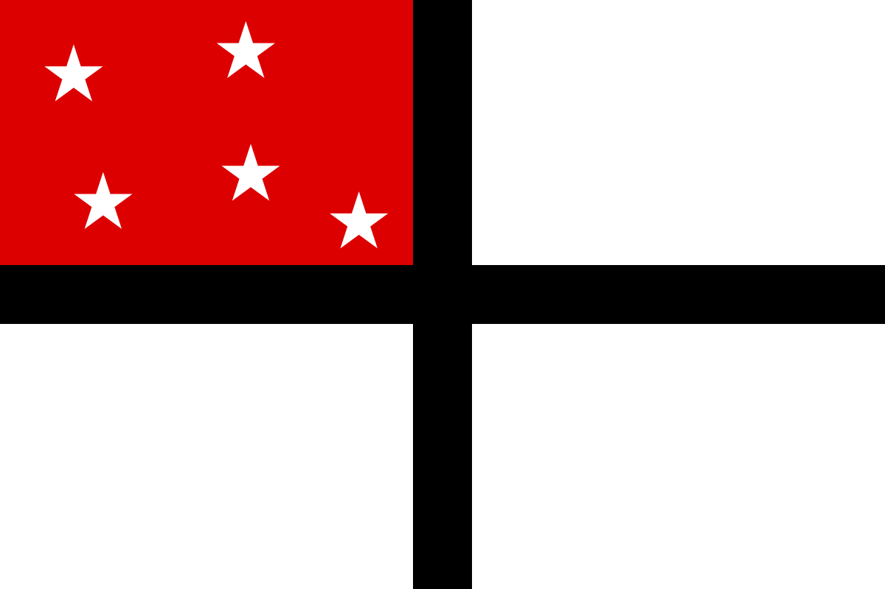

28. März 1884
Die Deutsch-Ostafrikanische Gesellschaft (DOAG) wird als Gesellschaft für deutsche Kolonisation gegründet. Sie dient zur Errichtung deutscher Ackerbau- und Handelskolonien.
| Gründer: | Carl Peters |
|---|---|
| Güter: | Gold, Gummi und Sklaven |
| Zeitraum | von 1885 bis 1919 |
| Lage | im heutigen Tansania, Ruanda, Burundi |
| Behandlung der Menschen | Bis zum beginn der deutschen "Schutzherrschaft" bestimmten die Araber den Handel. Als sie diesen an die Kolonialherren verloren versuchten sie sich mit den Massaigruppen, welche durch den Sklavenhandel von ihnen abhängig waren, den Deutschen gewaltsam zu widersetzen. Der sogenannte Araberaufstand wurde aber von den deutschen "Schutztruppen" blutig niedergeschlagen. Ebenso wurde auch gegen die Wahehe vorgegangen, welche nach hohen Verlusten der "Schutztruppe" niedergeschlagen wurde. |

Die Deutsch-Ostafrikanische Gesellschaft (DOAG) wird als Gesellschaft für deutsche Kolonisation gegründet. Sie dient zur Errichtung deutscher Ackerbau- und Handelskolonien.
Dr. Carl Peters (Mitbegründer der Gesellschaft für deutsche Kolonisation) reist mit Begleitern nach Sansibar um Land für die Gesellschaft zu erwerben. Sie tarnen den Grund ihrer Reise vor den Engländern.
Dr. Carl Peters schließt Verträge mit einigen Stammesführern. Diese Verträge bilden die Rechtsgrundlage für die spätere Schutzherrschaft durch das Reich.
Clemens Dehnhardt schließt einen Vertrag mit dem Sultan Achmed, welcher die Schutzherrschaft des Deutschen Reiches im Gebiet des Sultans anordnet.
Deutsch-englischer Vertrag über die gegenseitigen Interessengrenzen in Sansibar und Ostafrika wird geschlossen.
Festlegung der deutsch-portugiesischen Grenze.
Ein Vertrag zwischen dem Sultan Said Bargash und Dr. Carl Peters regelt die Übergabe eines Küstenstreifens an die DOAG.
Bismarck beschließt eine Blockade zur Waffeneinfuhr und Sklavenausfuhr in Ostafrika.